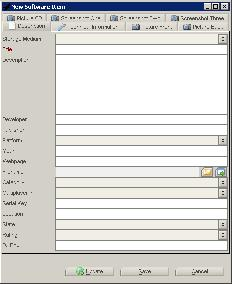

Item Form
The item form shows a single item, new or existing. The form allows you to create, update,
or delete an item. Note that double-clicking on a large text field opens the text in a larger window.

Changes to an item can be saved by pressing the "Save" button. Pressing the "Cancel" button discards any changes you have made (a warning is shown first) and closes the form. To delete an item, press the "Delete" button.
Images
Each image of an item is shown in a separate tab. Images can be exported, edited, added, deleted or replaced via these tabs.
To add or replace an image select for example "Add from File" from the "File" menu and browse for the specific image.
To save the image to disk select "save as".
Via the "edit" menu an image can edited or deleted. There are several options for editing such as rotating and sharpening.
Online Update
Not all modules offer this functionality. If this feature is available then there is an "Update" button in the lower part of the item form.
The Online Update allows you to find (and use) information about your item using an online service. More on this is explained here.
Attach File Info
To read the information from a movie file, a music file, etc go to the "file" menu and select "attach file info". If the item already has a filename defined, the information from that file is (re-) read. Otherwise a dialog is opened which allows you to browse for the file from which you want the information to be read. Data Crow will read the information from the file and update the values in the item form.